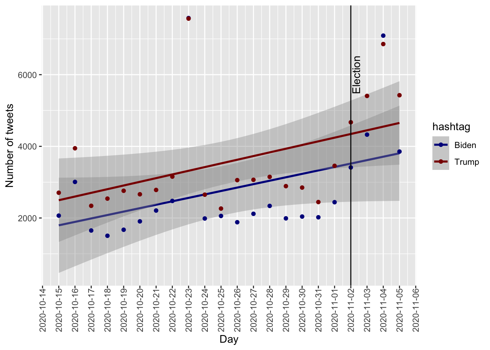

Election Tweet data was imported, merged, and cleaned - check our report for details. We limited our analysis to tweets from users registered within the U.S. and with only one of the cadidates hashtags (i.e.: we excluded tweets containing both #Trump/#DonaldTrump and #Biden/#JoeBiden).
tweets_usa %>%
group_by(state, hashtag)%>%
summarise(count = n()) %>%
ggplot() +
geom_col(aes(x=state, y=count, fill = hashtag ), position = "dodge") +
theme(axis.text.x = element_text(angle = 90, vjust = 0.5, hjust=1)) +
# labs (title = "Distribution of tweets across US states") +
scale_fill_manual(values = colors)tweets_usa %>%
mutate(date = as.Date(paste(creation_month, creation_day, '2020', sep = "/"), format = "%m/%d/%y")) %>%
group_by(date, hashtag) %>%
summarise(count = n()) %>%
ggplot(aes(x=date,y=count,color = hashtag)) +
geom_smooth(method = "lm") +
geom_point(aes(x=date, y=count, color = hashtag)) +
geom_vline(xintercept = as.Date("2020-11-02")) +
annotate("text", x = as.Date("2020-11-02"), y = 6000, angle = 90, label = "Election", vjust = 1.2, parse = TRUE) +
theme(axis.text.x = element_text(angle = 90, vjust = 0.5, hjust=1)) +
scale_x_date(date_breaks = '1 day') +
labs (#title = "Distribution of tweets over time",
x = "Day",
y = "Number of tweets") +
scale_color_manual(values = colors)
We see that there is an increase in tweets over time with Biden having less tweets overall (albeit not statistically significant).
Plot of likes and re-shares of tweets for Biden and Trump based on user significance (number of followers)
tweets_usa %>%
group_by(hashtag) %>%
filter(retweet_count > 0 & likes > 0) %>%
filter(user_followers_count <= 3750110) %>% # filter outliers
mutate(user_followers_count = user_followers_count/1000) %>%
ggplot() +
geom_point(aes(x = user_followers_count , y = retweet_count, color = hashtag, size = likes )) +
labs(#title = "How tweets are shared and liked depending on the number of followers",
x = "Numer of users, thousands",
y = "Number of retweets") +
scale_color_manual(values = colors)We see that the users with a lot of followers tweet about Trump but those tweets are not liked or re-shared. On the other hand, there are popular tweets related to Trup with a lot of likes and re-tweets,
usa_map <- map_data("state")
tweet_map <- tweets_usa %>%
group_by(state, hashtag) %>%
summarise(count = n(),
likes = sum(likes)) %>%
mutate (likes_tweets = likes*count,
region = tolower(state)) %>%
select (region, hashtag, likes_tweets) %>%
pivot_wider(names_from = "hashtag",
values_from = "likes_tweets") %>%
mutate(top = case_when(Biden>coalesce(Trump,0) ~ "Biden",
Trump>Biden ~ "Trump"))
states_tweet_map <- left_join(usa_map, tweet_map)
ggplot(data = states_tweet_map,
aes(x = long, y = lat,
group = group, fill = top)) +
geom_polygon(color = "gray90", size = 0.1) +
# labs(title = "Most popular tweets across states") +
scale_fill_manual(values = colors)NY <-tweets_usa %>%
filter (state_code == 'NY' & city == 'New York') %>%
filter (likes>10 & retweet_count>10) %>%
select (lat, long, hashtag, likes, retweet_count)
r <- GET('http://data.beta.nyc//dataset/0ff93d2d-90ba-457c-9f7e-39e47bf2ac5f/resource/35dd04fb-81b3-479b-a074-a27a37888ce7/download/d085e2f8d0b54d4590b1e7d1f35594c1pediacitiesnycneighborhoods.geojson')
nyc_neighborhoods <- readOGR(content(r,'text'), 'OGRGeoJSON', verbose = F)
NY_points <- NY
sp::coordinates(NY_points) <- ~long + lat
proj4string(NY_points) <- proj4string(nyc_neighborhoods)
matches <- over(NY_points, nyc_neighborhoods)
points <- cbind(NY, matches)
map_data <- geo_join(nyc_neighborhoods, points, "neighborhood", "neighborhood")
leaflet(map_data) %>%
addTiles() %>%
addPolygons(popup = ~hashtag) %>%
addMarkers(~long, ~lat, popup = ~hashtag, data = points) %>%
addProviderTiles("CartoDB.Positron")